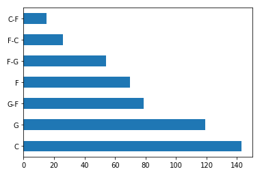

My Project
The NBA has been an active basketball league since 1946, more than 70 years of constant action and excitment. And when watching the game of basketball, what is more exciting and thrilling to watch than seeing a player explode and shoot the lights out? A 50 point game is a rare achievment for an NBA player, and it takes both skill and opprotunity to have one. I have chose to analyse all of the games in NBA history in which a player scored 50 or more points, and see how certain intangebles affect a player's chance at having one of those legendary games.
My sources
My source for this project was Basketball Reference. It is a branch of a major statistical data base called Sports Reference, a site that offers regular and advanced statistics for every major sport, and it's stats are accurate and valid even for games who occured 60 years ago or even more.
What am I asking?
One of the questions that crossed my mind when thinking about all of the 50 point NBA games is about positions. The game of basketball is divided to 5 positions: The point guard, shooting guard, small forward, power forward and center. Each position has it's own uniqe traits and they all play differntly than each other. So one of the many questions I would like to ask, is which position in basketball has the most 50 point games in NBA histoty?
